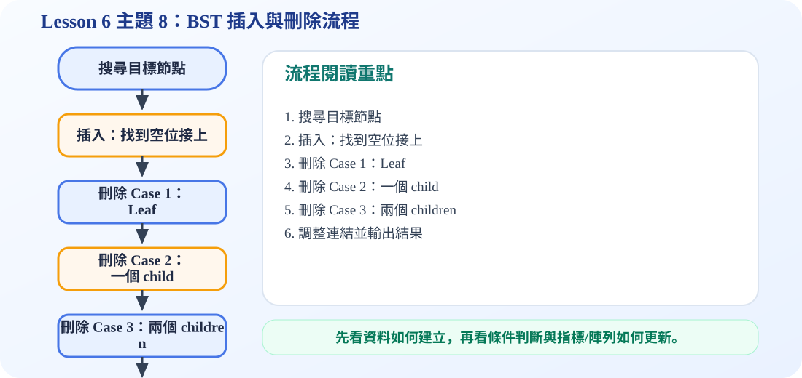

一、BST 插入 Insert
插入新節點時，先把它當成「搜尋目標」。從 root 開始，比較目前節點的 key：
插入本身不會移動原本節點，只是在找到的空位置掛上一個新節點。
二、BST 刪除 Delete：三種情況
刪除前
下面有一個 leaf
刪除後
3 是葉節點，直接移除。
刪除前
只有一個 child
刪除後
用唯一的 child 接上 parent。
刪除前
左、右 child 都存在
刪除後
可用 successor 取代：右子樹中最小的節點。
最常考的是 Case 3。刪除有兩個 children 的節點時，通常用 successor（右子樹最小值）或 predecessor（左子樹最大值）替代，這樣才能維持 BST 性質。
三、刪除演算法的文字流程
四、常見錯誤提醒
刪除兩個 children 的節點時，不可以隨便拿一個子節點補上。必須選 successor 或 predecessor，否則可能讓左邊出現比 root 大的值，或右邊出現比 root 小的值，BST 規則就會壞掉。
五、C 程式碼：BST 插入與刪除
bst_insert_delete.c
包含 insert、findMin、deleteNode、inorder 與 main 測試。deleteNode 已處理三種刪除情況。
/*
中文註解版程式：bst_insert_delete.c
說明：主題 8：BST 插入與刪除。刪除分成 leaf、one child、two children 三種情況。
閱讀方式：先看資料結構定義，再看操作函式，最後看 main() 如何測試。
*/
// 匯入標準輸入輸出函式庫，提供 printf / scanf 等功能。
#include <stdio.h>
// 匯入標準函式庫，提供 malloc / free / exit 等記憶體與程式控制功能。
#include <stdlib.h>
// 定義節點結構：資料欄位存節點內容，指標欄位負責連到其他節點。
typedef struct Node {
int key;
struct Node *left;
struct Node *right;
} Node;
// 建立新節點：配置記憶體、填入資料，並把左右指標初始化為 NULL。
Node* createNode(int key) {
Node* n = (Node*)malloc(sizeof(Node));
if (n == NULL) exit(1);
n->key = key;
n->left = NULL;
n->right = NULL;
return n;
}
// BST 插入：比目前節點小往左，大往右；空位置就是新節點位置。
Node* insert(Node* root, int key) {
if (root == NULL) return createNode(key); // 空位置就是插入點
if (key < root->key) root->left = insert(root->left, key);
else if (key > root->key) root->right = insert(root->right, key);
return root;
}
// 找右子樹中最小節點，常作為刪除兩個孩子節點時的 successor。
Node* findMin(Node* root) {
while (root != NULL && root->left != NULL) {
root = root->left;
}
return root;
}
// BST 刪除：依照節點有 0、1、2 個孩子分別處理。
Node* deleteNode(Node* root, int key) {
if (root == NULL) return NULL;
if (key < root->key) {
root->left = deleteNode(root->left, key);
} else if (key > root->key) {
root->right = deleteNode(root->right, key);
} else {
/* Case 1: no child */
if (root->left == NULL && root->right == NULL) {
free(root);
return NULL;
}
/* Case 2: one child */
if (root->left == NULL) {
Node* temp = root->right;
free(root);
return temp;
}
if (root->right == NULL) {
Node* temp = root->left;
free(root);
return temp;
}
/* Case 3: two children
Replace by successor: the smallest node in right subtree. */
Node* successor = findMin(root->right);
root->key = successor->key;
root->right = deleteNode(root->right, successor->key);
}
return root;
}
// Inorder 走訪：Left → Visit → Right；套用在 BST 會得到由小到大的排序。
void inorder(Node* root) {
if (root == NULL) return; // 遞迴終止條件：空節點不需要處理
inorder(root->left); // 先走左子樹
printf("%d ", root->key); // 再拜訪目前節點
inorder(root->right); // 最後走右子樹
}
// 釋放整棵樹：先釋放左右子樹，再釋放目前節點，避免記憶體洩漏。
void freeTree(Node* root) {
if (root == NULL) return; // 遞迴終止條件：空節點不需要處理
freeTree(root->left);
freeTree(root->right);
free(root);
}
// 主程式：建立測試資料，呼叫上方函式，觀察輸出結果。
int main(void) {
int data[] = {5, 3, 15, 12, 10, 7, 6};
int n = sizeof(data) / sizeof(data[0]);
Node* root = NULL;
for (int i = 0; i < n; i++) root = insert(root, data[i]);
printf("Before delete: ");
inorder(root);
printf("\n");
root = deleteNode(root, 12);
printf("After delete 12: ");
inorder(root);
printf("\n");
freeTree(root);
return 0;
}
可編輯 C 程式範例：含中文註解與線上編輯器
這一段提供可直接修改的 C 程式碼。可以按「複製程式」貼到線上編輯器執行，也可以下載 .c 檔案。
程式題目教學內容：BST 插入與刪除
一、程式題目講解
本題示範 BST 的刪除操作，特別是刪除 leaf、one child、two children 的判斷概念。學生需要理解刪除後仍要維持 BST 性質。
二、完整程式碼
完整可執行程式碼已保留在上方「可編輯 C 程式範例：含中文註解與線上編輯器」區塊中，檔名為 bst_insert_delete.c。該程式碼已加入中文註解，學生可以直接複製到 OnlineGDB、Programiz 或 OneCompiler 執行。
三、程式執行結果
Before delete: 3 5 6 7 10 12 15
After delete 12: 3 5 6 7 10 15 刪除前 inorder 為 3 5 6 7 10 12 15；刪除 12 後輸出變成 3 5 6 7 10 15，代表 12 被移除，而且剩下資料仍維持由小到大的 BST 中序結果。
四、程式流程圖與流程圖說明
本頁下方已保留原本的程式流程圖。閱讀流程圖時，可以依序掌握「初始化資料或節點 → 執行主要函式或判斷 → 輸出結果」的過程。先建立 BST 並輸出刪除前結果，再呼叫 deleteNode(root, 12)。函式先搜尋要刪除的節點，再依照該節點的孩子數量進行替換或移除，最後重新輸出 inorder。
五、重要函數與語法說明
deleteNode()：刪除 BST 節點；findMin()：在右子樹找 inorder successor；free()：釋放被刪除節點記憶體；inorder()：檢查刪除後排序是否正確。
六、整體說明
本題重點是 BST 刪除不能只把節點拿掉，還要處理子樹連接，確保左小右大的規則不被破壞。
程式流程圖：BST 插入與刪除流程
下圖是本主題對應的程式執行流程，適合搭配本頁 C 程式碼一起看。

流程講解
- 插入與搜尋流程很像，差別是找到 NULL 後要接上新節點。
- 刪除 leaf 最簡單，直接把 parent 的指標改成 NULL。
- 刪除只有一個 child 的節點時，用 child 取代該節點。
- 刪除有兩個 children 的節點時，通常用 successor 或 predecessor 取代。
這張流程圖把本頁程式的執行順序整理成一條清楚路徑。閱讀時先看輸入與資料如何建立，再看條件判斷、指標或陣列索引如何改變，最後用輸出結果確認程式邏輯是否正確。